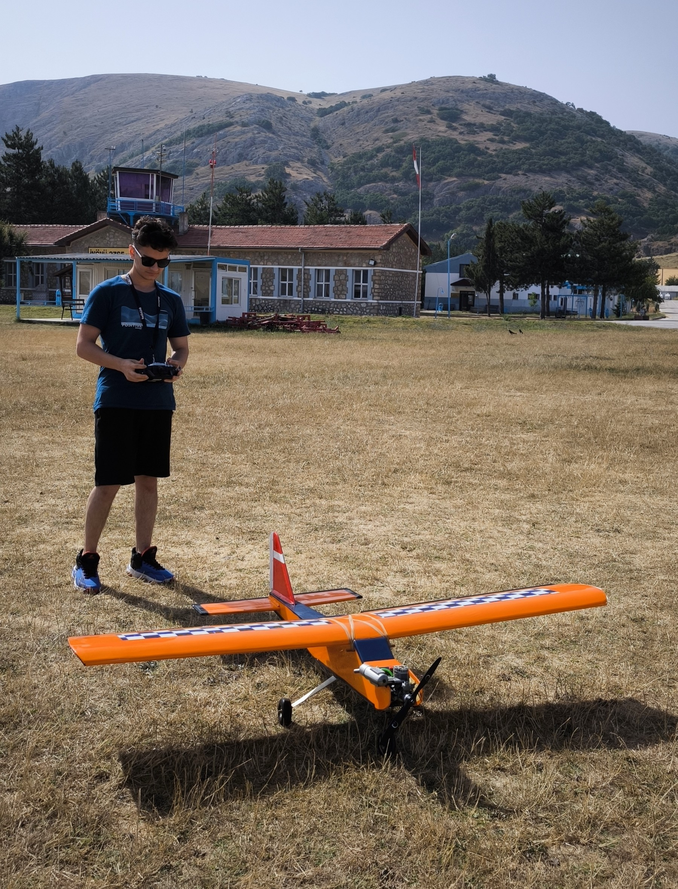
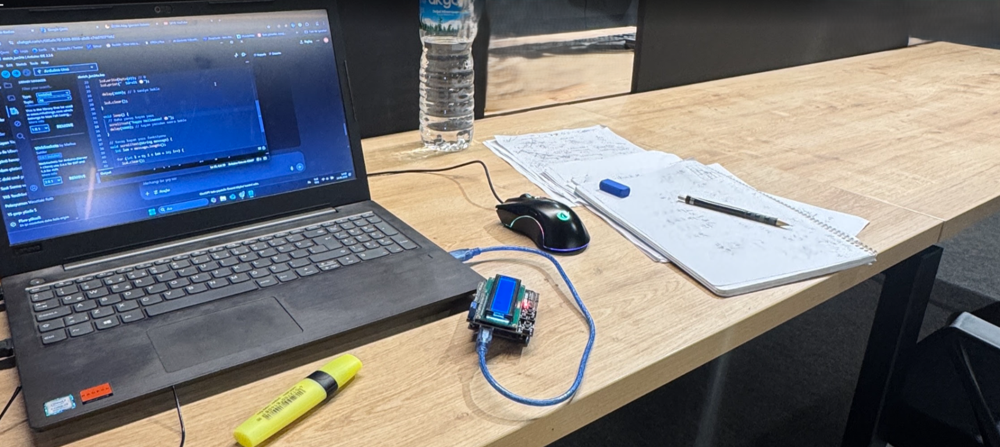

DJI Tarım Dronları Teknik Deneyimi
Tarım dronlarının sistemlerini kurma, bakım ve onarım işlemlerinde yardımcı olma; elektronik bileşenlerin işleyişini öğrenme ve teknik destek sağlama.
Ön Yüz Web Geliştirme Öğrencisi
Uçuş Sistemleri · Elektronik · Web Teknolojileri
Tarım dronları, insansız hava araçları, elektronik sistemler ve web teknolojileri üzerinde çalışan çok disiplinli bir mühendislik öğrencisiyim.
Teknik problem çözme, bakım ve onarım, elektronik sistemler ve ekip çalışmasına odaklanan bir öğrenciyim. İHA tasarımı, Otonom Uçuş Sistemleri, Model Uçak Teknolojileri, Robotik Kodlama ve Tarım dronları alanlarında pratik deneyim kazandım. Takım halinde çalışmayı, teknik bilgi üretimini ve yeni teknolojiler öğrenmeyi seviyorum.
Tarım dronlarının sistemlerini kurma, bakım ve onarım işlemlerinde yardımcı olma; elektronik bileşenlerin işleyişini öğrenme ve teknik destek sağlama.
Tarım dronlarının sistemlerini kurma, destekleme ve saha bakım çalışmalarıyla donanım ve kalibrasyon süreçlerinde deneyim kazanma.
Orta düzey İngilizce dilbilgisi kurallarını uygulama ve konuşma pratikleri.
İletişim becerilerini geliştirme, dinleme ve konuşma pratiği yapma.
Robotik platformlar için programlama; temel algoritmaların Python ve C++ ile geliştirilmesi.
Takım çalışması ve problem çözme becerilerinin geliştirilmesi.
Girişimcilik temelleri, iş modeli oluşturma ve ürün geliştirme süreçleri hakkında eğitim.
Elektronik devreleri model uçaklara uygulama, uçuş mekaniği ve aerodinamik prensipleri hakkında temel bilgi.

Takım olarak derecelendirme başarısı; otom uçuş kabiliyeti olan insansız hava aracının tasarım ve üretiminde görev alma, uçuş kontrol sistemleri ve elektronik devrelerin kurulumu ile test süreçlerine katılma.

Anlamsal HTML, CSS ve responsive tasarım tekniklerini içeren kişisel web ve portfolyo çalışmalarının geliştirilmesi; elektronik prototiplerin kodlama ve test süreçlerinin uygulanması.